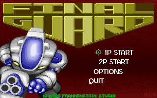
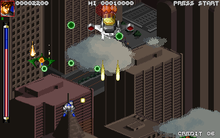

名稱：終極火力／公元二十二世紀終極捍衛 (Final Guard，英文版)
簡介：
香港Frankenstein 1996年出品的直向捲軸射擊遊戲，由第三波代理發行。1998年改由
梵太師以「公元二十二世紀終極捍衛」名稱重新發行 [待補]。


備註：本版為1998年梵太師版
保護：數字密碼，破解碼（1998版）：
FINAL.EXE
74 07 E8 C4
-- 00 -- --
備註：DosBox若無法安裝，可拷貝下列檔案到安裝目錄，再執行SETUP.EXE即可：
DOS4GW.EXE、FINAL.DAT、FINAL.EXE、SETUP.EXE
檔案：finalg-old.rar = 1996年第三波版（已破解）
操作：
F10 = 結束遊戲
操控方式（如移動、射擊、炸彈等）可使用SETUP.EXE查看與更改。